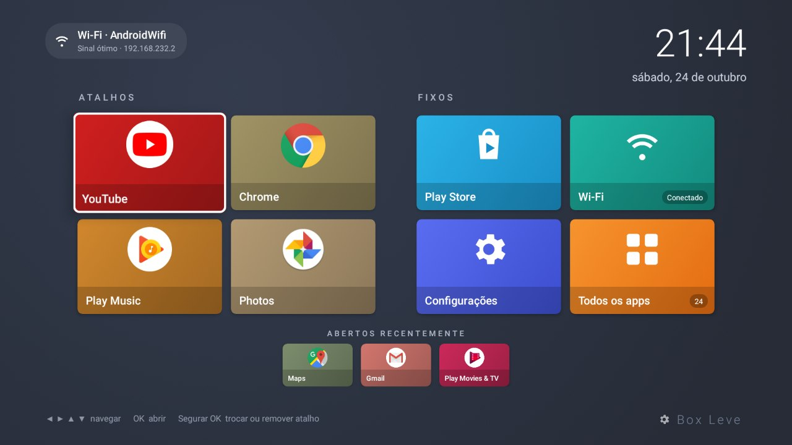
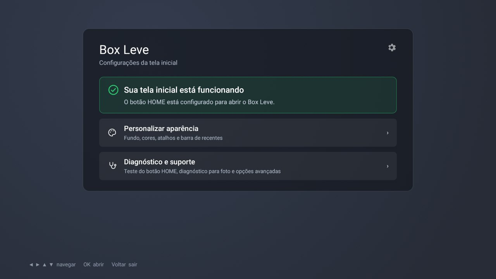

Uma tela inicial leve para a sua TV Box
Como instalar
Use o navegador da TV Box (Chrome ou outro) ou, se preferir, o app Downloader. O endereço é o mesmo nos dois: boxleve.github.io/baixar
Pelo navegador
- Abra o navegador da TV Box, digite boxleve.github.io/baixar na barra de endereço e confirme.
- O download do arquivo boxleve.apk começa sozinho. Se o navegador avisar que o arquivo pode ser perigoso, escolha Baixar mesmo assim (ou Manter).
- Quando terminar, toque em Abrir no aviso do navegador. Se o aviso sumiu, abra os Downloads no menu do navegador (os três pontinhos) ou o app Arquivos da caixa e escolha boxleve.apk.
- Se o Android disser que a instalação está bloqueada, toque em Configurações, ative Permitir desta fonte para o navegador e volte. Depois toque em Instalar.
Pelo app Downloader
- Na TV Box, abra a Play Store e instale o app Downloader.
- No Downloader, digite boxleve.github.io/baixar e confirme.
- Quando o Android perguntar, permita que o Downloader instale apps e toque em Instalar.
Depois de instalar
- Aperte HOME no controle, escolha Box Leve e depois Sempre. Se ele abrir só desta vez, aperte HOME de novo e escolha Sempre. Se a caixa não perguntar nada, abra o Box Leve pela lista de apps: ele mostra o que fazer.
Em caixas com Android 7 ou mais antigo, a permissão fica em Configurações → Segurança → Fontes desconhecidas.
Prefere o link completo? github.com/boxleve/app/releases/latest/download/boxleve.apk
Configurações simples
Uma tela mostra se a sua tela inicial está funcionando e o que fazer quando não estiver. No diagnóstico, você testa o botão HOME e mostra um resumo com letras grandes para tirar foto e pedir ajuda.

Privacidade
O Box Leve não coleta dados, não mostra anúncios e não envia nada sobre você ou seus apps. Ele usa a internet só para procurar e baixar novas versões dele mesmo. O diagnóstico para foto mostra apenas informações técnicas da caixa.
Perguntas frequentes
Em quais aparelhos funciona?
Em TV Boxes com Android 5 ou mais novo, usando o controle remoto ou o cursor do controle.
Minha caixa voltou para a tela do fabricante. E agora?
Algumas caixas trocam a tela inicial sozinhas, por exemplo ao ligar. Abra as configurações do Box Leve (o "Box Leve" no canto da tela inicial): ele mostra o que aconteceu e oferece a solução.
Como atualizar?
O Box Leve avisa quando há uma versão nova. Você também pode procurar em Configurações → Diagnóstico e suporte → Procurar atualização.
Como voltar para a tela antiga?
Nas Configurações do Android, abra Apps → Box Leve e desinstale. Na próxima vez que apertar HOME, a tela antiga volta.
Preciso de ajuda. O que envio?
Em Configurações → Diagnóstico e suporte → Mostrar diagnóstico, tire uma foto da tela e mande para quem for ajudar.